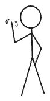
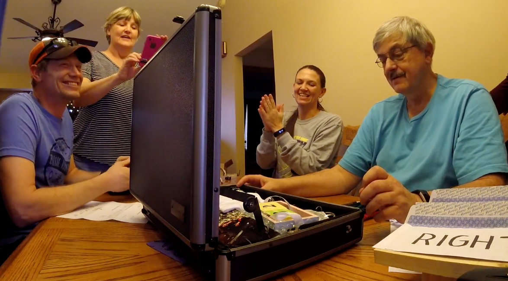
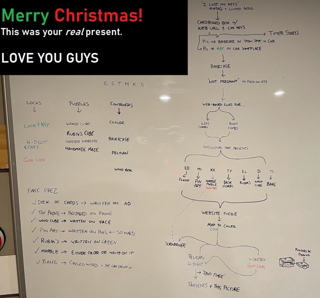
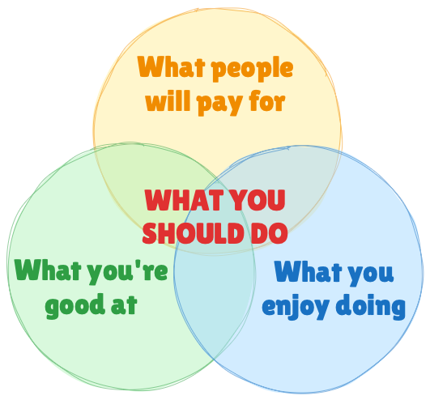
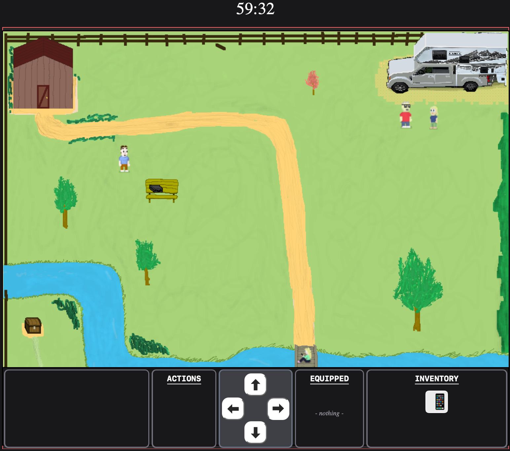
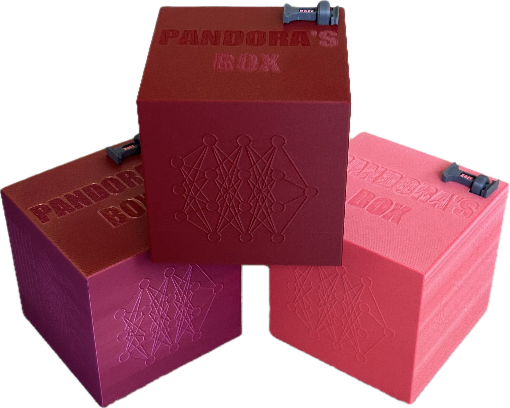

Hello, World
August 1, 2026
Aaron's Puzzles is one man's hobby project - creating small-scale escape room inspired puzzles. This is the "about" page.

I'm Aaron. I am a full-stack hobbyist with formal training in electrical engineering and data analytics. I do that for work - but for fun I make puzzles, write a blog, write notes, and maintain a personal data journal.
History
Some of my puzzles are physical, some digital, and some are both.
| Year | Box | Concept Tested | Online Feature Test | Offline Feature Test |
|---|---|---|---|---|
| 2018 | Pregnancy Announcement | Basic POC | - | Briefcase + DIY simple box |
| 2021 | Hill Christmas | Online/Offline POC | Basic online proof of concept | Multiple boxes |
| 2022 | The Vault | Reusable boxes | 3D model | Reusable box |
| 2023 | Cookie Jar | DIY Box & parallel game design | Point & Click Adventure | DIY Box |
| 2024 | Brief Mystery | Online only option | Pixel art game | Passive electronics |
| 2025 | Pandora's Box | Offline-only & multiple copies | Animation | 3D printing & active electronics |
| 2026 | ??? | Full-up test! | ??? | ??? |
Now for a brief history of every puzzle thus far...
Pregnancy Announcement (2018)
My first adventure making a puzzle consisted of a lockable briefcase, terrible woodworking, and some paper print-outs.

It was a blast to make - and went off very well!
Hill Christmas boxes (2021)
During COVID I learned web development. I had the idea to create a puzzle webpage that also incorporated physical components. By Christmas 2021 I had my first cyber-physical puzzle done.

Again it was a blast to make - and again it went very well!
I enjoyed making puzzles. I was good at it. And people seemed to like them. Then it hit me:

I knew what I was doing for Christmas every year from then on.
The Vault (2022)
The first box designed to be reusable was "The Vault".
IMAGE NEEDED
The Vault was constructed primarily with off-the-shelf parts. There is one custom-built component inside it, but it's pretty janky.
The webpage is presented as a linear series of screens. It was designed and built by hand without any web framework.
Cookie Jar (2023)
My second box might still be my favorite.
IMAGE NEEDED
The Cookie Jar took the bespoke "hand crafted" element to the max. I planned on building 2 of them, but after probably 20 hours spent physically crafting the first one I gave up on that ambition. It was a case of "and the kitchen sink" as I threw in basically every idea and concept I had at the time.
The webpage is presented as a point-and-click adventure, utilizing a rotoscoped line drawing of (an approximation of) my house. You could move around by clicking on arrows and discover things.
The Cookie Jar rocked.
Brief Mystery (2024)
After 2 successful, reusable puzzle boxes - I decided that having to physically have the box meant not many people did them.

The Brief Mystery was designed at the outset to be cyber-physical, but where the "physical" part was truly optional.
The physical part was a literal briefcase, with a simple passive electronic component inside it. That component I was able to recreate digitally.
The webpage is presented as top-down tiny videogame. I hand-drew and hand-coded every part of the game using HTML Canvas elements and Svelte as a framework. The puzzle is playable from any computer, right now! Try it out!
Pandora's Box (2025)
Brief Mystery was an experiment in "digital only". Pandora's Box was the opposite. I made 3 functional copies.

Pandora's Box was designed in Fusion 360 and 3D printed at home. The same year I got those tools I learned enough about how to use them to create a full puzzle box from scratch.
Pandora's Box was also the first box to use a microcontroller and active electronics. Nothing fancy - but at least something interesting to find under the lid.
The design is self-resetting, which is a lessons-learned from having to "reset" all the other boxes so many times (and screwing it up on more than one occasion).
The webpage is literally just a placeholder for the animation project I did concurrent with Pandora's Box.